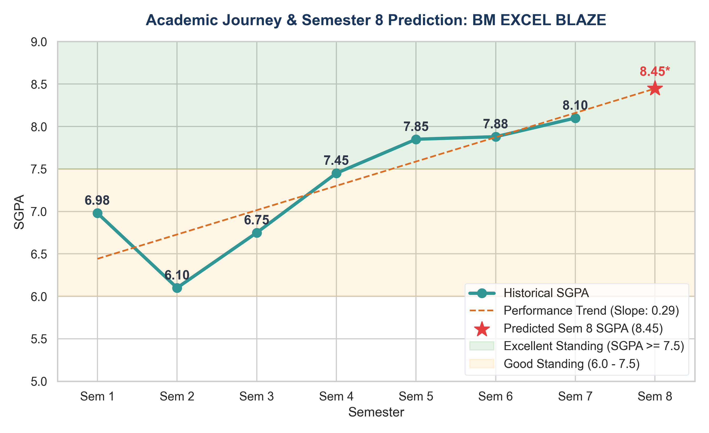
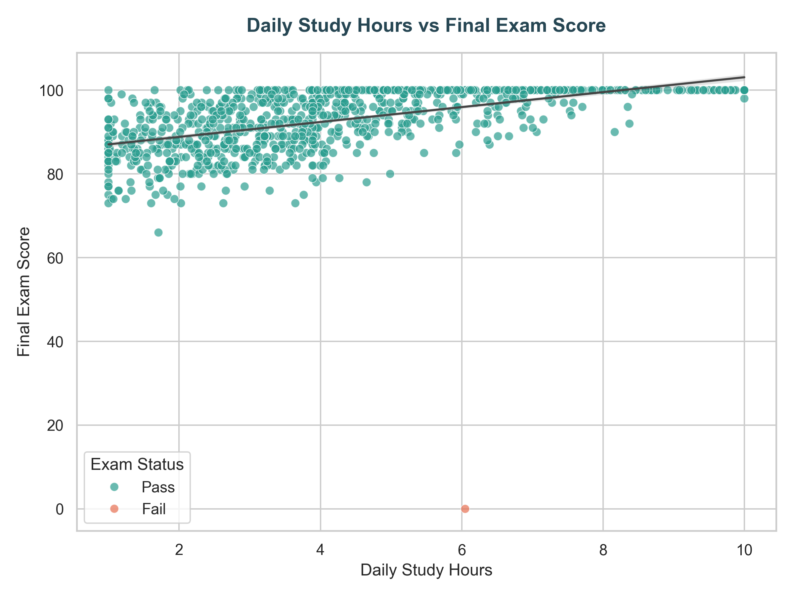
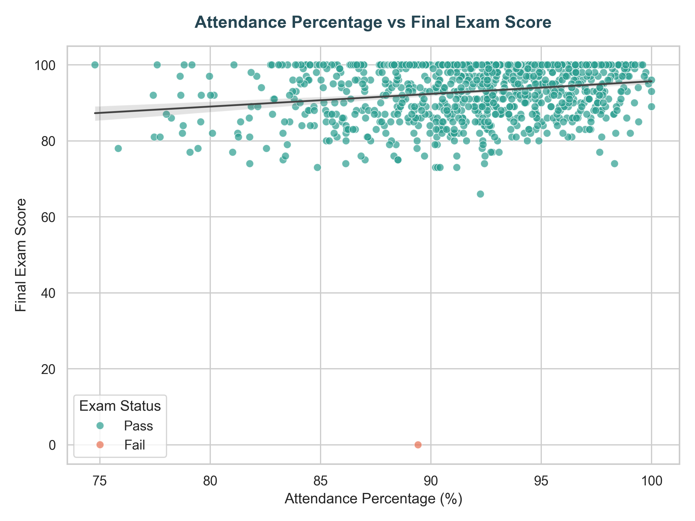

Institutional Business Intelligence & Predictive Modeling Report
Monitored Students
Class Mean Grade
Passing Threshold ≥ 60
Class Presence Level
Flagged for Counselors
Individual academic trajectory audit for Hallticket 22D41A7210. Student shows a remarkable upward recovery trend from Semester 2 to Semester 7.

Figure 1: SGPA Trend Line & Semester 8 Regression Projection

Figure 2: Impact of Daily Study Hours on Exam Score

Figure 3: Impact of Attendance Percentage on Exam Score
Four regression models were trained on 80% of the dataset and evaluated on the remaining 20% validation split. Evaluated metrics are Mean Absolute Error (MAE), Root Mean Squared Error (RMSE), and Coefficient of Determination (R²).
| Model Name | MAE | RMSE | R2_Score |
|---|---|---|---|
| Linear Regression | 3.133144 | 3.903448 | 0.651066 |
| Decision Tree | 3.391281 | 4.815609 | 0.468933 |
| Random Forest | 2.919450 | 3.907388 | 0.650361 |
| Gradient Boosting | 2.823908 | 3.639489 | 0.696661 |
H0: Internet availability does not affect scores.
Result: Reject H0 ($p < 0.05$). Students with internet access score an average of **3.0 points higher** than those without. This highlights a clear digital divide.
H0: Parent education levels show no correlation to grades.
Result: Reject H0 ($p < 0.001$). Highly significant correlation. Students of parents with Master's/Bachelor's degrees have higher baseline support at home.